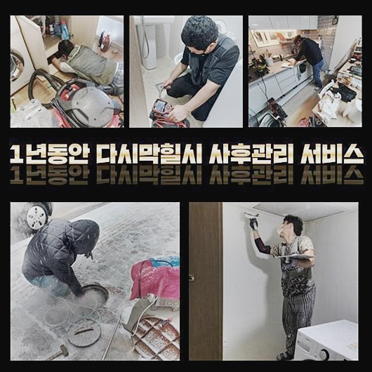
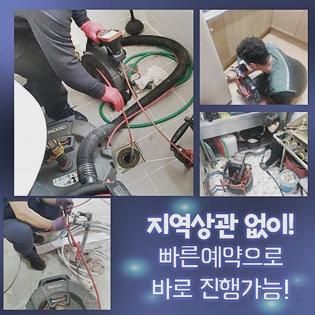
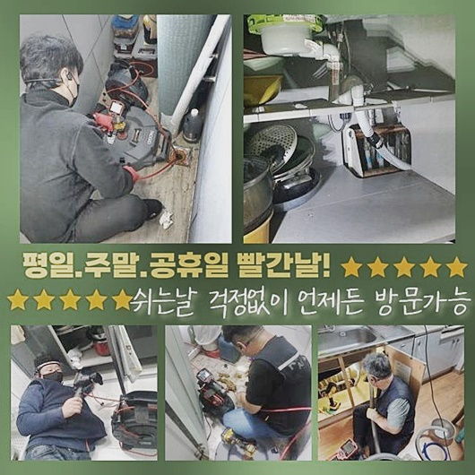
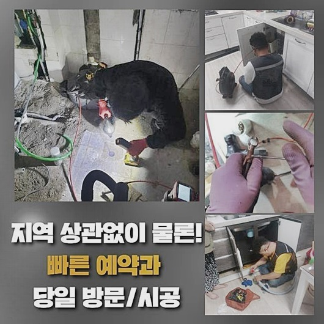
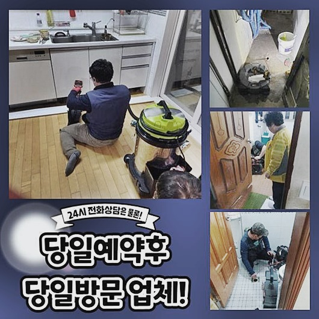
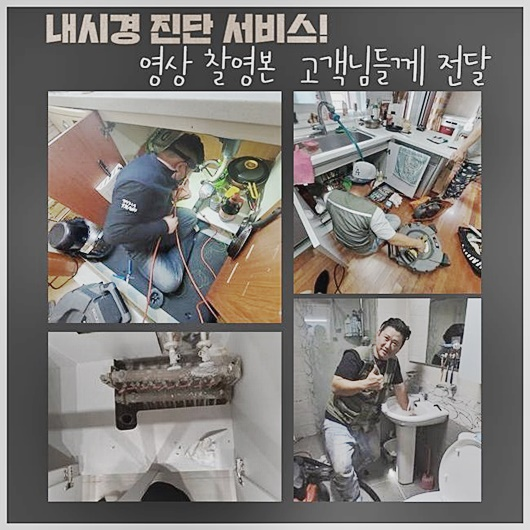

🏠 파주 아동동변기배관막힘 금릉동 악취차단 누수
파주 금릉동 싱크대막힘 전문 시공 후기

📋 작업 개요
- 위치: 파주 금릉동, 금릉동, 파주
- 서비스 유형: 싱크대막힘, 변기막힘, 하수구막힘, 배관막힘, 누수수리, 역류해결, 뚫는업체, 악취차단
- 작업 일시: 2024. 9. 21. 17:55
- 업체명: 하수구수사대 (010-5615-2118)
🔍 문제 상황
파주 아동동변기배관막힘 금릉동 악취차단 누수
여름 겨울 가리지 않고 많은 빌딩에서 하수관의 고장으로 인해 저희를 찾아주시는데요
이번엔 다소 어려움이 있던 하수구막힘 사건으로 인하여 힘드셨던 의뢰인 댁의 설비에 대해 함께 나눠볼까 합니다
여러 세대가 함께 사는 주택의 발코니 구조가 잘못된 것인지 통수가 아예 막혀버렸다는 상황임을 접수해 주셨어요
세탁하고 탈수하기만 하면 정상적인 배수가 이뤄지지 않아서 온통 습기로 가득찼을 모습이라서 어찌할 바를 모르겠다 하셨죠!
사유를 검토해보고 비정상적인 설비로 인한 고충을 빠르게 극복시키기 위해서 작업지로 지체 없이 갔습니다
현장에 진입하자 마자 테라스 측면의 이모저모를 관측하면서 오늘 업무의 노선을 정하게 되는데요
물 넘침이 생겨버린 현장이라 세탁기가 있는 베란다의 배수관 구멍이 가로막혀서 물이 바닥에 머물러있는 사태임을 파악하게 됐어요
세제가 혼합된 물에는 천 조각같은 물질들도 간혹 섞여있었고 퀘퀘한 냄새까지도 가까이 갈수록 세게 느껴졌네요
가벼운 오물과 잔수를 빨아당기는 석션장비를 활용해서 웅덩이를 만든 혼탁한 잔수들을 모조리 집수통으로 이동시켰어요
보이지 않는 관 내에 있는 넘쳐나는 하수 역시도 말끔하게 빼내 줘서 원활하게 관측할 수 있는 내부 환경을 구축했어요
이따금 단순한 막힘이라면 석션 업무만 수행해서도 해소가 되는 때도 있어요

🔎 원인 분석
💡 전문가 진단: 정밀 진단 장비를 사용하여 슬러지의 고착 여부를 판명하고 타격/세척 작업을 실시했습니다.
반복적으로 석션해 보고 하수를 조금씩 배출하면서 배수로가 확보되었는지 간단한 시험에 착수했습니다
약간씩 나아지는가 싶었는데 금방 물이 막히는 것을 보니 심하게 막혔다는 판단이 들었습니다
흡입만으로는 나아질 막힘이 아님이 판단이 섰기에 다른 단계로 스무스하게 넘어갔습니다
관로 속을 관측할 수 있게 고안된 첨단 성능을 갖춘 배관 내시경같은 기기를 알차게 쓰면서 고장이 나타난 직접적인 원인을 보기로 했습니다
이와같은 내시경 기기는 노즐의 헤드 쪽에 작은 카메라가 장착된 기기로 의사분들이 신체 기관을 검사할 때 주입하는 그 의료장비와 같은 원리의 장치입니다
실시간으로 촬영을 하면서 내부에 매설되어 있는 좁고 막힌 배관 속의 마치 용종같은 이물질들을 즉각 받아들일 수 있어요
내시경을 삽입해 내부 컨디션을 살펴보니 옷가지에서 탈락된 찌꺼기와 말라붙은 섬유유연제까지 더해진 집합체가 발견되었습니다
물길이 미약하긴 했지만 완벽하게 가로막힐 정도로 골칫거리는 아닌 듯 해서 추가 분석이 필요하다 판단했네요
카메라를 더 깊은 곳까지 삽입해서 휘어진 형태의 밑 부분까지 체크해 봤어요
관이 기다랗게 연결된 구조라서 원하는대로 현장 배관이 구불구불해도 어렵지 않게 진입이 되는 장점이 있답니다
주방 싱크대 방면 하수구와 접촉이 이루어지는 쪽에서 주름관의 부속품이 뜬금없이 들어가 있었죠
개수대 물을 이동시키는 목적으로 활용하는 배수호스의 일부분이 끊어진 채 내부에 들어차 있었습니다
개수대에서 흘러 들어가서 쑥 빠지는 크기는 아니었기에 싱크대를 교체하거나 새로 설치하면서 잘린 쓰레기를 대수롭지 않게 버린 것 같았어요

🔧 작업 과정
견고하고 날렵한 물질이 물 속에서 흔들리고 내부에 압박을 주면 하수구의 여러 부위에 충격을 입히게 되어 부식이나 부러짐을 야기합니다
통로에 이물이 떡하니 자리하다보니 이동 경로도 축소되고 정반대로 내압은 계속 차오르니 집 안의 수돗물을 이용할 때 번번이 역행이 일어나고 만 것입니다
강한 회전력을 바탕으로 하는 샤프트를 베란다 구멍에 진입시키고 가동하여 하수관을 청결하게 관리해 주었습니다
샤프트는 강한 노커가 부착된 관통기인데 빠른 회전력을 보이며 고강도의 말단 체인이 맞닿으면서 이물질을 부숴주는 원리죠!
내부에서 장기간 고착화되면 점차 견고하게 바뀌는데 그냥 석션만 돌려서는 소거시킬 수가 없으니 소규모의 입자로 분리해서 다 끌어당겨주는 게 답입니다
샤프트에 집중하는 동시에 순간순간 마다 내시경 장비도 주입을 하여 오염물질들이 대다수 몰려있는 측면 방면으로 포커싱을 두고 씻어내려 주면 됩니다
원활한 작동을 위해 물도 넣어서 불려주기도 하면서 소규모로 나뉘어진 물질과 역시나 작아진 끈적이는 물질도 남김 없이 제거했습니다
의문이 남아있으셨던 고객님은 주름배관이 도대체 뭐 때문에 하수구의 깊숙한 측면까지 빠져버리게 된 것일지 알다가도 모를 일이라며 질문을 해오셨네요
초기 설치시공을 받는 시절 담당자들의 태만한 태도로 이 같은 이상 현상이 생겼을 것이 거의 명백했고 사실 여러 곳에서 일어나는 일입니다
내가 폐기한 적이 없던 대상이 하수구 고장에 직격타를 준 시발점이 된 무수한 케이스들을 몇 개 알려드리면서 오늘날 많은 곳에서 겪고 있는 사고일뿐이라고 알렸습니다
집안의 주요한 설비시설이 유해한 문제가 생기면 스스로를 질책하시는 고객님도 마주한 경험이 있답니다
오랜 시간동안 하수구를 다뤄왔던 방대한 데이터를 기반으로 모든 경우를 고쳐드렸다고 어필도 하면서 마음 놓으시라고 이야기 했어요
막힘을 불렀던 커다란 주름 호스를 건져낸 후 보니 호스가 예상한 것보다 길어 통로가 봉쇄될 수 밖에는 없었겠다 혀를 내둘렀네요
이와 같은 잔해물 때문에 물의 정상이동에 제동이 걸린데다 심지어 베란다와 부엌의 배관이 맞물린 형상이라 양쪽 어디에서라도 물을 폐기하면 내려가기는 커녕 거꾸로 퐁퐁 샘솟는 일이 안타깝게도 생겨버린 거죠
사태의 근본을 파헤치자 궁금해 하셨던 고객님도 체증이 내려가는 것 같다며 빠른 정상화를 부탁하셨습니다
개수대 밑도 뚫음 작업을 해보니까 내부에서 투출된 찌꺼기의 투출량이 상당히 인상적이었어요
열정적인 작업으로 꺼낸 물질들을 거름망으로 걸러서 잔수는 변기에 내리고 액상화되지 않은 잔량은 분리 배출을 해줬습니다!
이를 그대로 변기로 배출한다면 변기나 배수로의 다른 막힘이 탄생할 게 틀림 없습니다
쾌적한 관로 속으로 회복시켰다면 앞서 작업했던 싱크대를 다시금 체크하고 반대편도 신중히 점검을 하면서 퀄리티를 높이려 애썼습니다
두번 째 장소인 베란다 바닥도 원활하게 물빠짐이 생기나 봤는데 물이 시원하게 내려감을 검증할 수 있었어요


✅ 작업 완료
막힘을 뚫기 전에 생기던 역류도 더이상 보이지 않는단 점을 신중하게 살피고 튄 이물질이 없나 점검하고 고객님께 주의사항을 안내드렸죠
불현듯 하수구 시설이 마비되는 경우는 물을 사용하는 곳이면 어디든 생길 수 있는 일입니다
우리 집의 하수구에서 물이 한참을 뜸들이고 배출되거나 거꾸로 퐁퐁 샘솟는 정황이 발견된다면 일분일초라도 빠르게 숙련공을 불러야 하겠죠!
실내에 머무시면서 걸림돌이 없이 건물에서 활동하실 수 있도록 세부적인 진단과 처리로 잘못된 점을 개선시키겠습니다
하수구 관련한 모든 문제를 상담주시면 정중하면서도 꼼꼼한 서비스로 보답드리겠으니 저희를 찾아주세요




⚠️ 베란다 누수 및 방수 관리 방법
- ✅ 비가 많이 올 때 창틀 주변이나 아래층 천장에 얼룩이 생기는지 정기적으로 확인해 보세요.
- ✅ 우수관 주변 실리콘 마감이 들뜨거나 깨진 틈새가 있는지 손상 여부를 수시로 체크하세요.
- ✅ 베란다 바닥 타일의 줄눈(메지)이 소실되면 그 틈으로 물이 침투하여 누수가 유발됩니다.
- ✅ 누수 의심 증상 발견 시 방치하면 아래층 손실이 커지므로 즉시 전문가의 진단을 받으십시오.
💡 핵심 정리
- 확실한 장비 작업(내시경 점검 및 샤프트 스케일링)으로 원인을 뿌리 뽑습니다.
- 작업 후 1년 이내에 동일한 부위 재발 시 100% 무상 A/S 서비스를 보장합니다.
- 서울 · 경기 · 인천 전 지역에 24시간 언제든 긴급 출동할 수 있도록 항시 대기 중입니다.
❓ 자주 묻는 질문 (FAQ)
🚨 파주 금릉동 싱크대막힘 문제로 고민이신가요?
정확한 원인 진단과 확실한 시공으로 재발 없는 해결을 약속드립니다.
24시간 긴급 출동 | 서울 · 경기 · 인천 전지역 | 1년 내 재발 시 무상 A/S